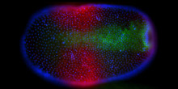
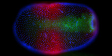

A4: Publications
The MADS-domain protein PPM2 preferentially occurs in gametangia and sporophytes of the moss Physcomitrella patens.
Quodt V, Faigl W, Saedler H, Münster T, Gene 400, 25-34 (2007)
To date, the function of MADS-domain transcription factors in non-seed plants remains largely elusive, although a number of genes have been isolated and characterized from a variety of species. In our study we analyzed PPM2, a classical MIKC-type MADS-box gene from the moss Physcomitrella patens, taking advantage of the unique technical properties Physcomitrella offers in terms of efficient homologous recombination. We determined mRNA and protein distribution and performed targeted disruption of the genomic locus for functional analysis of PPM2. Despite weak ubiquitous expression, PPM2 protein is mostly found in male and female gametangia and basal parts of developing sporophytes. Therefore, PPM2 seems to function in both the haploid and the diploid phase of the moss life cycle. This situation reflects an evolutionary transition state of gene recruitment from an ancestral gametophytic generation into a derived sporophytic generation which became dominating in tracheophytes. However, a knock-out of the PPM2 gene did not cause visible phenotypical changes in the respective structures. The implications of our findings for the understanding of the evolutionary history of MADS-box transcription factors in plants are discussed.
MIKC* MADS-protein complexes bind motifs enriched in the proximal region of late pollen-specific Arabidopsis promoters.
Verelst W, Saedler H, Münster T, Plant Physiology 143, 447-460 (2007)
The genome of Arabidopsis (Arabidopsis thaliana) encodes over 100 MADS-domain transcription factors, categorized into five phylogenetic subgroups. Most research efforts have focused on just one of these subgroups (MIKC(c)), whereas the other four remain largely unexplored. Here, we report on five members of the so-called Mdelta or Arabidopsis MIKC* (AtMIKC*) subgroup, which are predominantly expressed during the late stages of pollen development. Very few MADS-box genes function in mature pollen, and from this perspective, the AtMIKC* genes are therefore highly exceptional. We found that the AtMIKC* proteins are able to form multiple heterodimeric complexes in planta, and that these protein complexes exhibit a for the MADS-family unusual and high DNA binding specificity in vitro. Compared to their occurrence in promoters genome wide, AtMIKC* binding sites are strongly overrepresented in the proximal region of late pollen-specific promoters. By combining our experimental data with in silico genomics and pollen transcriptomics approaches, we identified a considerable number of putative direct target genes of the AtMIKC* transcription factor complexes in pollen, many of which have known or proposed functions in pollen tube growth. The expression of several of these predicted targets is altered in mutant pollen in which all AtMIKC* complexes are affected, and in vitro germination of this mutant pollen is severely impaired. Our data therefore suggest that the AtMIKC* protein complexes play an essential role in transcriptional regulation during late pollen development.
MADS-complexes regulate transcriptome dynamics during pollen maturation.
Verelst W, Twell D, de Folter S, Immink R, Saedler H, Münster T, Genome Biology 8, R249 (2007)
BACKGROUND:Differentiation processes are responsible for the diversity and functional specialization of the cell types that compose an organism. The outcome of these processes can be studied at molecular, physiologic, and biochemical levels by comparing different cell types, but the complexity and dynamics of the regulatory processes that specify the differentiation are largely unexplored.RESULTS:Here we identified the pollen-specific MIKC* class of MADS-domain transcription factors as major regulators of transcriptome dynamics during male reproductive cell development in Arabidopsis thaliana. Pollen transcript profiling of mutants deficient in different MIKC* protein complexes revealed that they control a transcriptional switch that directs pollen maturation and that is essential for pollen competitive ability. We resolved the functional redundancy among the MIKC* proteins and uncovered part of the underlying network by identifying the non-MIKC* MADS-box genes AGL18 and AGL29 as downstream regulators of a subset of the MIKC* MADS-controlled genes.CONCLUSION:Our results provide a first, unique, and compelling insight into the complexity of a transcription factor network that directs cellular differentiation during pollen maturation, a process that is essential for male reproductive fitness in flowering plants.
back to project area A
 
